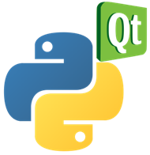

Week 1: Starting Python#
Day 1: Getting Started#
Theoretical part: study Chapter 1: “Object-Oriented Design”, Chapter 2: “Objects in Python” and Chapter 3: “When Objects Are Alike” of the training book. Make the exercises at the end of each chapter.
Practical part: set-up a basic set of tools on your computer:
Python itself from https://www.python.org/downloads/releases, best using the Windows 64-bit installer;
Install the Pycharm Professional IDE from https://www.jetbrains.com/pycharm/download
{kind=link}
{kind=link}
Install the Eclipse IDE from https://www.eclipse.org/downloads/;
And configure Eclipse for usage of Python by installing PyDev.
Now, that you have installed Python and Eclipse, you can follow the introduction in Eclipse on the offered tools and create, run and debug your first Python programs. Python has its own package manager, called pip. Using pip, you have access to thousands and thousands of packages that make the richness of the Python eco-system. Follow the tutorial on https://realpython.com/what-is-pip/ to get your first appetite for pip.
Day 2: Virtual Environment and PyLint#
Theoretical part: study Chapter 4: “Expecting the Unexpected” and make the exercises at the end of the chapter. Also study PEP8 from https://www.python.org/dev/peps/pep-0008/ or https://pep8.org.
Practical part: getting familiar with a virtual environment. The purpose of the virtual environment is to isolate projects on your computer from each other and to explicitly manage the dependencies for your projects.
Read and practice https://realpython.com/python-virtual-environments-a-primer/
PyLint is a static code analyzer that provides feedback on your Python code. It can detect a series of flaws, such as deviations from PEP8 coding standards, unwanted side effects and other vulnerabilities. Read more on https://www.pylint.org/. PyLint can be installed using pip, see https://realpython.com/what-is-pip/.
Read the tutorial on https://realpython.com/courses/writing-cleaner-python-code-pylint/.
No extra’s needed.
Update your Eclipse/PyDev settings to make use of the virtual environment, see https://www.pydev.org/manual_101_interpreter.html.
The PyLint integration for Eclipse / PyDev is described here: https://www.pydev.org/manual_adv_pylint.html
Day 3: Git#
Theoretical part: study Chapter 5: “When to use Object-Oriented Programming” and Chapter 6: “Python Data Structures”. Make the exercises at the end of each chapter.
Practical part: getting familiar with the professional Git-flow:
{kind=link}
Install git on your Windows computer from https://git-scm.com/download/win. Study the videos on this page: https://git-scm.com/doc.
No extra’s needed.
Install the Egit client in your Eclipse: https://www.eclipse.org/egit/download/.
Follow a Git tutorial, from Coursera or find one on YouTube e.g. https://www.youtube.com/watch?v=8JJ101D3knE. You can also find a lot of tutorials and reference materials here: https://git-scm.com/docs. Personally, I find it useful to use git command line tools for initializing a git repository and managing that repository. For day-to-day routine activities, I prefer using the tools integrated in my IDE. Please go-ahead, give it a try and figure out what suits you best.
Read the blog by Vincent Driessen: https://nvie.com/posts/a-successful-git-branching-model/ and practice the steps as described in this blog. This blog describes the structure of a master branch, a development branch and multiple feature and bugfix branches. The importance of such separation needs to be stressed and should become your default way of working in any software project. You create your code as features, one feature per feature branch; you issue pull requests to merge your features with the development branch once your feature development is complete; your master branch holds the releases of your team.
Create a readme.md in the root of a project and experiment how you can provide the essential information that any user of your code should know. The format of such a file is called MarkDown; you can find an introduction to MarkDown syntax here.
Day 4: Strings and Regular Expressions#
Theoretical part: study Chapter 7: “Python Object-Oriented Shortcuts” and Chapter 8: “Strings and Serialization”. Make the exercises at the end of each chapter. Note that chapter 8 includes regular expressions. These are often used for filtering patterns in text strings and are somewhat complex to understand. Therefore, follow the more elaborate training on https://realpython.com/regex-python/ and https://realpython.com/regex-python-part-2/. When developing your regular expressions, you may find it useful to debug these in https://regex101.com/.
Practical part: developing unit tests using PyTest: https://pytest.org/. Use the tutorials from https://realpython.com/python-testing/ and https://realpython.com/pytest-python-testing/. For the PyTest integration in Eclipse / PyDev see https://www.pydev.org/manual_adv_pyunit.html
Day 5: Qt and Python#
Today, no theoretical part. Create your first UI using QT and its Python bindings in PyQT. Follow the tutorial on https://realpython.com/python-pyqt-gui-calculator/. When you’re done with this simple calculator, you can extend the exercise as follows:
Recreate the calculator using Qt Designer, download from https://www.qt.io/download and see https://doc.qt.io/qt-5/qtdesigner-manual.html for documentation.
Extend the calculator into a scientific calculator.
Summary of the first week#
In the first week, you have learned and practiced:
Python data structures and objects
A work environment including debugger and virtual environment
The use of pip
Using PyLint to check your code
Collaborative workflows using a professional Git-flow
Creating unit tests using PyTest
Regular expressions
UI design for Python using Qt